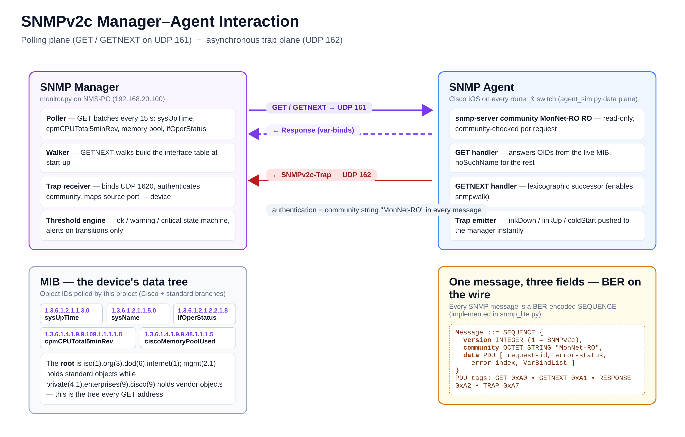
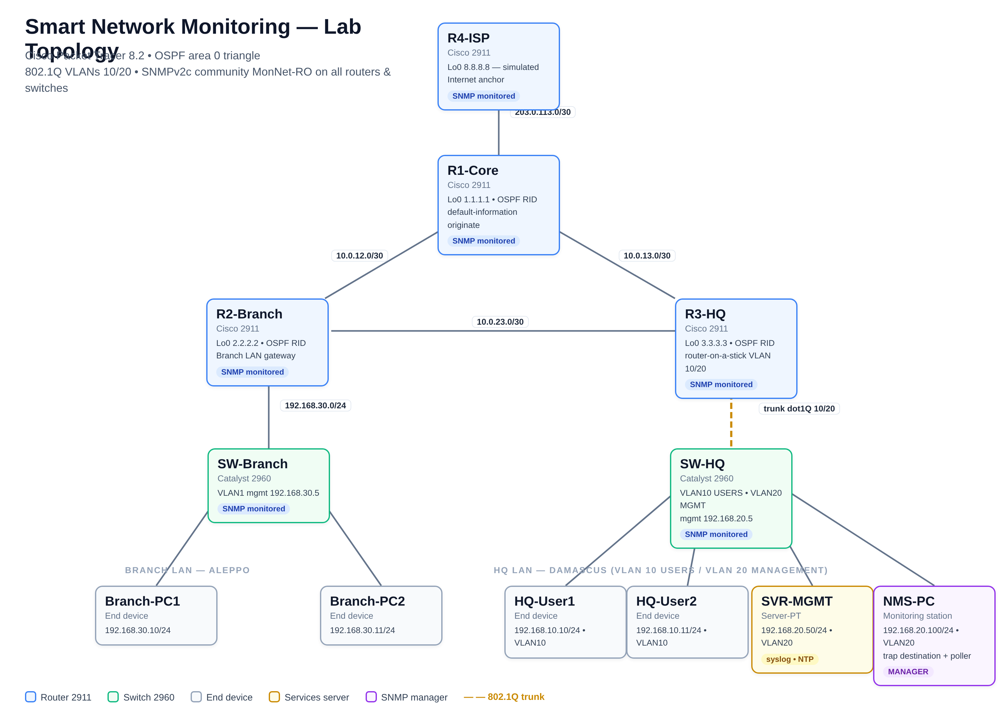
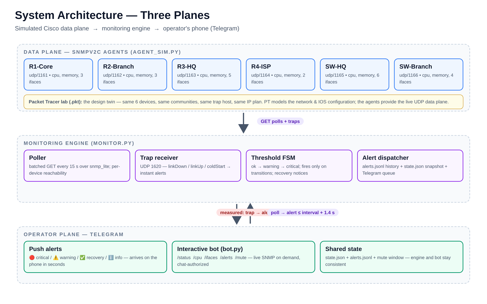

المقدمة
الخلفية والدافع
تحوّلت شبكات المؤسسات الحديثة من مجموعة صغيرة من الأجهزة المركزية إلى أنظمة موزّعة تمتد عبر مواقع متعددة وتحمل حِملًا حيويًّا للأعمال، وتتعطّل بطرق لا تظهر للذين يعتمدون عليها. فموجّهٌ تستنزف ذاكرته ببطء، ومنفذُ مبدّلٍ يُسقط الوصلات بصمت، ومعالجٌ يشبعه أحد العمليات الداخلية — كلّها لا تعلن عن نفسها إلا بعد وقوع العطل. وُجدت مراقبة الشبكات تحديدًا لسدّ هذه الفجوة: فهي تحوّل الحالة الداخلية الخفية لكل جهاز إلى بيانات قابلة للملاحظة والقياس والتنبيه. يبني هذا المشروع نظامًا كهذا من طرف إلى طرف، بدءًا من محاكاة شبكة مؤسسية متعددة المواقع وصولًا إلى قناة إشعار تبلغ جيب المشغّل في أقل من ثانية.
الأسلوب التقليدي في تشغيل شبكة صغيرة أو متوسطة هو أسلوب ردّ الفعل. حين يبلّغ المستخدمون عن بطء تطبيقٍ ما، يسجّل المشغّل الدخول إلى كل موجّه ومبدّل بدوره، وينفّذ سلسلة من أوامر show، ويحاول إعادة بناء ما تغيّر. يعاني هذا النمط من ثلاث نقاط ضعف بنيوية. أولًا: زمن الكشف يتوقف على ملاحظة المستخدمين للمشكلة، ما يعني أن الأعراض تكون قد بلغت حدّ الجسامة قبل أن يبدأ أي تحقيق. ثانيًا: يزداد متوسط زمن الإصلاح خطيًّا مع عدد الأجهزة، لأن انتباه المشغّل موردٌ تتابعيّ لا يتوزّع. ثالثًا: لا يُحفَظ أي سجلّ تاريخي، فلا تُربَط أنماط التدهور المتكررة ببعضها عبر الحوادث.
صُمِّم بروتوكول إدارة الشبكة البسيط SNMP لعكس هذه العلاقة. فكل جهاز مُدار يُبقي باستمرار مجموعة منظّمة من العدّادات والمقاييس — قاعدة معلومات الإدارة MIB — ويكشفها عبر UDP لمحطة مراقبة. ومديرٌ يستقصي هذه الكائنات كل بضع ثوانٍ، ويطبّق منطق العتبات على القيم، ويدفع التنبيهات إلى هاتف المشغّل، يحوّل الحالة الداخلية الخفية للشبكة إلى نظام إنذار فعّال. ومستويا «الأعطال» Fault و«الأداء» Performance من نموذج الإدارة الكلاسيكي FCAPS — وهما ما يعالجه هذا المشروع — هما تحديدًا هاجسَي الكشف السريع عن الأعطال والتعرّف على تدهور الأداء قبل أن يصبح انقطاعًا.
طرح المشكلة
يجيب المشروع عن سؤال محدّد: هل يمكن مراقبة شبكة مؤسسية صغيرة محاكاة، مبنية بالأدوات المتاحة لطالب، بالصرامة الهندسية نفسها التي تتطلبها شبكة إنتاجية؟ يتحلّل السؤال إلى أربع مشكلات فرعية. يجب أولًا تصميم الشبكة نفسها وعنونتها وتهيئتها لإدارةٍ سهلة، بما فيها مجتمعات SNMP ووجهات الـTraps على كل موجّه ومبدّل. وثانيًا يجب أن تتحدّث محطة المراقبة بروتوكول SNMP على مستوى البروتوكول نفسه، لأن طالبًا يكتفي باستدعاء مكتبة جاهزة لا يستطيع أن يشرح النظام أو يدافع عنه أو يصحّحه. وثالثًا يجب أن يكبت منطقُ التنبيه الضجيجَ مع ضمان ظهور الحوادث الحقيقية بسرعة. ورابعًا يجب أن تصل قناة الإشعار إلى إنسان فورًا، على جهاز يحمله ذلك الإنسان فعلًا، لا على لوحة قيادة لا يراقبها أحد في الثانية صباحًا.
الأهداف
يحدّد المشروع خمسة أهداف قابلة للقياس، مقترنًا كل منها بمعيار القبول المستخدم للتحقق منه في الفصل السابع. وتغطي مجتمعةً المسار الكامل من الحالة الخام للشبكة إلى التنبيه المُسلَّم:
- بناء مختبر موثَّق متعدد المواقع في Cisco Packet Tracer 8.2: اثنا عشر جهازًا، ومثلث OSPF في المنطقة 0 بين ثلاثة موجّهات، وفصل VLAN في المقرّ الرئيسي، وتفعيل SNMP على الموجّهات والمبدّلات الستة.
- تنفيذ SNMPv2c على مستوى البروتوكول: مرمّز BER/ASN.1، ومعالجة طلبات GET وGETNEXT، وترميز رسائل الـTrap وفكّها، باستخدام مكتبة Python القياسية وحدها.
- تنفيذ محرّك عتبات يعمل بوصفه آلة حالات: عتبات المعالج عند 70% (تحذير) و85% (حرج)، والذاكرة عند 75% و90%، مع إطلاق التنبيهات عند انتقالات الحالة فقط، وإشعارات تعافٍ عند زوال الشرط.
- تسليم التنبيهات عبر بوت Telegram: تنبيهات مدفوعة لكل حادث، مع أوامر تفاعلية (/status و/cpu و/ifaces و/alerts و/mute) تستعلم حالة الأجهزة الحيّة عند الطلب.
- التحقق من النظام الكامل باختبارات آلية: اثنان وعشرون اختبارًا من طرف إلى طرف تغطي رزمة البروتوكول والوكلاء وتمرين الحوادث ومعالجات البوت، مع قياس زمن الكشف لكل نوع تنبيه.
النطاق والحدود
تحدّد ثلاثة حدودٍ ما لا يحاول المشروع فعله عمدًا. فالإصدار 2c من البروتوكول يصادق بسلسلة community نصية مكشوفة؛ ويُناقَش إطار المصادقة والخصوصية الأقوى في SNMPv3 بوصفه عملًا مستقبليًا دون تنفيذ، لأن جوهر المشروع التعليمي هو ميكانيكا البروتوكول وخطّ إنابيب التنبيه. والشبكة المحاكاة: فـPacket Tracer يُمثّل تهيئة IOS بأمانة لكن رزمة شبكته المحاكاة غير قابلة للوصول عبر مقابس UDP حقيقية من عملية خارجية، لذا يتولّى مستوى البيانات الحيّ وكلاءَ مطابقين للبروتوكول يكشفون بالضبط معرّفات OID التي يكشفها موجّه حقيقي من Cisco. وأخيرًا العتبات قيم ثابتة في ملف تهيئة لا خطوط أساس متعلّمة؛ وبنية البيانات اللازمة لكشف الشذوذ ينتجها المحرّك فعلًا، ما يجعل تلك التوسعة مباشرة.
تنظيم التقرير
يطوّر الفصل الثاني الأساس النظري: نموذج FCAPS، ومعمارية SNMP، وبنية MIB، وصيغة رسالة v2c على السلك. ويعرض الفصل الثالث بيئة المحاكاة وتصميم الشبكة، بما فيها خطة العنونة وسبب كل قرار تصميمي. ويوثّق الفصل الرابع تنفيذ الشبكة داخل Packet Tracer حتى أوامر IOS الفعلية. ويفصّل الفصل الخامس محرّك المراقبة: بروتوكول SNMP المكتوب من الصفر، والوكلاء المُحاكين، وآلة حالات العتبات، ومستقبل الـTraps. ويغطي الفصل السادس مستوى الإشعار والتحكّم عبر Telegram. ويقدّم الفصل السابع منهجية التحقق ونتائجها المقيسة. ويقدّم الفصل الثامن دليل استخدام عمليًّا للتشغيل والاستعلام. ويختم الفصل التاسع بالمنجزات والأعمال المستقبلية، وتليها المراجع وثلاثة ملاحق تشغيلية.
الأساس النظري: SNMP وإدارة الشبكات
إدارة الشبكات ونموذج FCAPS
إدارة الشبكة، بمعناها الهندسي، هي مجموعة الوظائف التي تحافظ على الشبكة تعمل ضمن المستويات المتفق عليها من التوافر والأداء. يجسّدها نموذج FCAPS — الاختصار المتّبع منذ أوائل التسعينيات — في خمس مستويات وظيفية: إدارة الأعطال Fault، وإدارة الإعداد Configuration، والمحاسبة Accounting، وإدارة الأداء Performance، وإدارة الأمن Security. يستهدف هذا المشروع مستويي الأعطال والأداء من طرف إلى طرف: الكشف عن أعطال الوصلات والأجهزة لحظة وقوعها، والتعرّف على تدهور المعالج والذاكرة قبل بلوغه حدّ الانقطاع. أما مستويات الإعداد والمحاسبة والأمن فيوفّر المشروع لها البنيةَ الأساسية (تسجيل syslog وNTP وضبط community للقراءة فقط) دون أن يطوّر عليها تطبيقات مستقلة.
تكمن قيمة النموذج في أنه يمنح أي نظام مراقبة مقياسَ اكتمالٍ صريحًا. فسؤال «هل يكتشف نظامك سقوط وصلة خلال ثانية؟» سؤال مستوى أعطال؛ وسؤال «هل يلتقط استنزاف الذاكرة المتدرّج قبل الانهيار؟» سؤال مستوى أداء؛ وسؤال «هل يوقّع كل عاملٍ حسّاس بسجلّ زمني؟» سؤال محاسبة جزئيًّا. بهذه التقسيمات يمكن تقويم ما بُني في هذا المشروع بلغة معيارية مفهومة لأي مهندس شبكات، لا بلغة أدوات خاصة به وحده.
تطوّر بروتوكول SNMP
ظهر SNMP أوّل مرة في RFC 1157 عام 1990 بوصفه حلًّا بسيطًا لمشكلة توحيد رؤية الأجهزة المتباينة، وسرعان ما أصبح المعيار الواقعي لإدارة شبكات IP. وسّعت MIB-II في RFC 1213 مجموعة الكائنات القياسية، ثم قدّم جيل SNMPv2c — المُعتمَد في هذا المشروع — صيغةً محسّنة للرسائل وعمليات جِدّية مثل GETBULK إضافةً إلى آلية Trap الجديدة المعرّفة في RFC 3416. أما SNMPv3 فأضاف المصادقة والتشفير عبر نموذج الأمان USM في RFC 3414، وبقي للإصدار 2c موقعه التعليمي والعملي: فهو ما تفعله معظم شبكات الحرم الجامعية والمختبرات فعلًا، وصيغته على السلك أبسط ما يمكن تنفيذه بالكامل وفهمه بايتًا بايت.
نموذج المدير والوكيل
يقوم البروتوكول على تقسيم عمل صارم بين طرفين. الوكيل Agent: برنامج صغير يعيش داخل الجهاز المُدار — موجّه أو مبدّل أو خادم — ويحافظ على قاعدة MIB، ويستجيب لطلبات القراءة على المنفذ UDP 161. والمدير Manager: تطبيق محطة الإدارة الذي يرسل الاستقصاءات، ويستقبل الإشعارات غير المتزامنة على المنفذ UDP 162. بينهما لا وسيط ولا حالة مشتركة: كل رسالة مستقلة قائمة بذاتها، وهذا بالضبط ما يجعل البروتوكول متينًا وسهل المحاكاة والاختبار.

الشكل 2.1 يلخّص المعمارية كما ينفّذها هذا المشروع: المدير على يسار الصورة يستقصي ويلتقط، والوكيل على اليمين يجيب ويدفع، وقاعدة MIB في الوسط هي عقد الاجتماع بين الطرفين. كل ما يفعله النظام لاحقًا — عتباتٍ كان أو بوتَ Telegram — يقف فوق هذه المعمارية ولا يغيّر فيها حرفًا.
قاعدة MIB ومعرّفات OID
كل كائن مُدار في MIB يُعرَّف بمعرّف رقمي OID — مسارٌ في شجرة هرمية تبدأ من الجذر iso(1) ثم org(3) ثم dod(6) ثم internet(1). تحت فرع الإدارة mgmt(2.1) تعيش الكائنات القياسية مثل زمن التشغيل sysUpTime وحالة تشغيل الواجهة ifOperStatus؛ وتحت الفرع الخاص private(4.1) ثم enterprises(9) ثم cisco(9) تعيش كائنات الشركة مثل حمل المعالج cpmCPUTotal5minRev واستخدام ذاكرة ciscoMemoryPoolUsed. جدول 2.1 يعرض الكائنات التي يستقصيها المحرّك فعلًا، وهي مجموعته العاملة الكاملة: هوية الجهاز، وزمن تشغيله، وحمولة معالجه، وذاكرته، وحالة واجهاته، وعدّادات مرورها.
| الكائن (OID) | النوع | الدلالة والاستخدام في المشروع |
|---|---|---|
| sysName (.1.3.6.1.2.1.1.5) | نص | هوية الجهاز — تُستخدم في تسمية كل التنبيهات والجداول |
| sysUpTime (.1.3.6.1.2.1.1.3) | عدّاد زمني | زمن التشغيل منذ الإقلاع — يُقاس منه عمر الوكيل |
| cpmCPUTotal5minRev (.1.3.6.1.4.1.9.9.109.1.1.1.1.8) | مقياس % | حمل المعالج خلال 5 دقائق — مدخل عتبتي 70% و85% |
| ciscoMemoryPoolUsed (.1.3.6.1.4.1.9.9.48.1.1.1.5) | مقياس | الذاكرة المستخدمة — مدخل عتبتي 75% و90% |
| ifOperStatus (.1.3.6.1.2.1.2.2.1.8) | عدّ | حالة تشغيل كل واجهة — 1 أعلى / 2 أسفل / 3 اختبار |
| ifInOctets / ifOutOctets (.1.3.6.1.2.1.2.2.1.10/16) | عدّادات | بايتات الداخل والخارج — تُقرأ للتأكد من حيوية الواجهات |
الاستقصاء مقابل Traps
يتوافر للمدير مستويان مكمّلان لجمع البيانات، ويستخدم المشروع كليهما لأن كلاً منهما يعالج فئة مختلفة من الحوادث. الاستقصاء Polling: يرسل المدير دوريًّا رسائل GET وGETNEXT كل خمس عشرة ثانية (الافتراضي الإنتاجي؛ وخمس ثوانٍ في وضع التمرين)، فيحصل على صورة متسلسلة تصلح للمقارنة مع العتبات ورسم الاتجاهات. الإشعارات Traps: يدفع الوكيل رسالةً واحدة لحظة الحدث — سقوط وصلة، إقلاع بارد، تغيّر تهيئة — دون انتظار سؤال أحد. زمن الاستقصاء يقع بين صفر والفاصل الزمني، أما الـTrap فيصل خلال أجزاء من الثانية. القاعدة الهندسية المعتمدة هنا: الاتجاهات والإحصاءات للعتبات من الاستقصاء، والأعطال اللحظية من الـTraps.
ترميز الرسائل: BER على السلك
كل رسالة SNMPv2c بايتاتٌ على السلك بترميز BER — الترميز الأساسي لـASN.1 المعرّف في X.690. ويتّبع كل حقل صيغة «نوع-طول-قيمة» TLV: بايتُ نوعٍ، ثم طولٌ (بايت واحد إن قلّ عن 128 أو بايت طويل بصيغة مرتّبة)، ثم القيمة نفسها بالتسلسل الكبير للبايتات. الرسالة الكاملة سلسلة متداخلة من كتل TLV: رسالةٌ تحتوي إصدارًا وسلسلة community وPDU؛ والـPDU بدوره يحمل طلبًا ومعرّفًا وحالة خطأ وفهارس وقائمة روابط متغيّرات VarBind؛ وكل رابط متغيّر زوجٌ من OID مرمّز بايتًا بايت وفقًا لقاعدة الأرقام الأربعينية، وقيمةٍ بترميز يحدّده نوعها. تنفيذ هذا الترميز من الصفر — لا استيراد مكتبة جاهزة — هو ما يجعل كل بايت يمرّ عبر النظام قابلًا للشرح أمام لجنة المناقشة، وقد وفّر حوالي عشرين اختبارًا ذهابًا وإيابًا يتحقق أن كل نوع يُرمَّز ثم يُفكّ إلى القيمة الأصلية بلا أي انحراف.
بيئة المحاكاة وتصميم الشبكة
اختيار منصّة المحاكاة
انطلق اختيار المنصّة من سؤال عملي واحد: أي بيئة تمنح طالبًا شبكةَ مؤسسةٍ متعددة المواقع مع وصولٍ كامل إلى تهيئة IOS دون كلفة ترخيص أو عتاد؟ تتنافس على الجواب منصّتان. GNS3 يُشغّل صور IOS الحقيقية داخل محاكاة Dynamips، فيقدّم سلوكًا أصيلًا إلى أقصى حدّ، لكنه يتطلب توفير صور النظام — وهي مقيّدة الترخيص — ويستهلك ذاكرة كبيرة عند تعدد الموجّهات. أما Cisco Packet Tracer فهو مجاني عبر أكاديمية شبكات Cisco وخفيف بما يكفي لتشغيل مختبر من اثني عشر جهازًا على حاسوب محمول عادي، ويُمثّل سلوك IOS على مستوى الوظيفة لا على مستوى الصورة الثنائية. جدول 3.1 يلخّص الموازنة التي حسمت القرار.
| المعيار | GNS3 | Packet Tracer 8.2 |
|---|---|---|
| التقنية | محاكاة بصور IOS حقيقية (Dynamips) | محاكاة على مستوى السلوك الوظيفي |
| الترخيص | يتطلب توفير صور IOS مقيّدة الترخيص | مجاني عبر Cisco Networking Academy |
| الاستهلاك | ثقيل: مئات ميغابايت RAM لكل موجّه | خفيف: مختبر كامل على حاسوب واحد |
| تهيئة SNMP | أوامر IOS كاملة أصلية | أوامر IOS كاملة ممثَّلة |
| الوصول من عملية Python خارجية | قابل للوصول عبر UDP حقيقي | رزمة محاكاة غير قابلة للوصول خارجيًّا |
الحدّ المعرفي واستجابة التصميم
يُظهر السطر الأخير من الجدول الحدَّ الذي لا يجوز إخفاؤه: ففي Packet Tracer تُفعَّل أوامر snmp-server وتظهر نتيجها في show snmp كأنها IOS حقيقي، لكن رزمة الشبكة داخل المحاكاة لا تنتمي إلى رزمة نظام التشغيل المضيف، فلا يستطيع برنامج Python خارجي أن يرسل UDP فعليًّا إلى موجّهٍ داخلها. كان لهذا الحدّ أثرٌ حاسم على المعمارية: فالمشروع يزاوج بين مستوى تصميم الشبكة — ملف .pkt كامل يفتح في Packet Tracer ويُدرَّس ويُفحَص — ومستوى بيانات حيّ من ستة وكلاء SNMP مكتوبين بـPython يكشفون نفس كائنات Cisco بنفس الـcommunity ونفس مضيف الـTrap المرقّمة في ملف المختبر. وهكذا يُختبر كود المراقبة على بيانات حيّة تتدفّق فعلًا، بينما تبقى خطة الشبكة والتهيئة موثّقة بأمانة في الملف الذي يفتحه المقيّم. والانتقال إلى موجّهات حقيقية لاحقًا يعني تعديل عناوين النهايات في ملف YAML واحد — لا شيء آخر.
الطوبولوجيا وقرارات التصميم
تحاكي الشبكة مؤسسةً بثلاثة مواقع: المقرّ الرئيسي HQ، وموقع فرع Branch، ونفاذ إلى مزوّد الخدمة عبر موجّه R4-ISP. تتصل النواة بمثلث OSPF بين R1 وR2 وR3 في المنطقة 0، وبذلك يبقى بين أي موجّهين مساران منفصلان مهما انقطعت وصلة واحدة — فلا عطلُ وصلةٍ واحدة يعزل موقعًا ولا يوقف المراقبة نفسها. ويمارس R3 التوجيه بين الشبكات المحلية الافتراضية بأسلوب Router-on-a-stick: جذعٌ فيزيائي واحد يحمل VLAN 10 للمستخدمين وVLAN 20 للإدارة، فيفصل حِمل البشر عن حِمل الأنظمة بقرارٍ واعٍ قليل الكلفة. ويستضيف موقع المقرّ مستوى الخدمات: الخادم SVR-MGMT الذي يقدّم syslog وNTP على العنوان 192.168.20.50، والحاسوب NMS-PC الذي يمثّل محطة الإدارة على 192.168.20.100 — وهو نفسه وجهة الـTraps في تهيئة كل جهاز.

خطة العنونة و VLAN
صُمِّمت الخطة هرميًّا وقابلة للاختبار: وصلات النواة والنفاذ على شبكات /30 لا تحمل سوى طرفيها، ومواقع المستخدمين على /24 قابلة للتوسعة، ولكل موجّه عنوان loopback ثابت يصلح معرّفًا له في OSPF. يعرض الجدول 3.2 الخطة كاملةً كما هي منفّذة في ملف المختبر — وهي نفسها التي تُغيَّر في ملف config.yaml عند الانتقال إلى عتاد حقيقي.
| المقطع | VLAN | الشبكة الفرعية | البوابة | الأعضاء |
|---|---|---|---|---|
| النفاذ R1 ↔ R4-ISP | — | 203.0.113.0/30 | — | R1 .1 — R4 .2 |
| النواة R1 ↔ R2 | — | 10.0.12.0/30 | — | R1 .1 — R2 .2 |
| النواة R1 ↔ R3 | — | 10.0.13.0/30 | — | R1 .1 — R3 .2 |
| النواة R2 ↔ R3 | — | 10.0.23.0/30 | — | R2 .1 — R3 .2 |
| شبكة الفرع المحلية | 1 | 192.168.30.0/24 | R2 .1 | PC1 .10 — PC2 .11 — SW-Branch .5 |
| مستخدمو المقرّ | 10 | 192.168.10.0/24 | R3 Gi0/0.10 .1 | User1 .10 — User2 .11 |
| إدارة المقرّ | 20 | 192.168.20.0/24 | R3 Gi0/0.20 .1 | SVR-MGMT .50 — NMS-PC .100 — SW-HQ .5 |
تصميم سياسة SNMP
اعتُمدت سياسة واحدة موحّدة على الأجهزة الستة المُدارة قاطبةً: مجتمع قراءةٍ فقط MonNet-RO، وموقعٌ ومسؤولٌ يظهران ككائنَي sysLocation وsysContact فتُثبَت هوية كل وكيل، ووجهة Traps واحدة هي NMS-PC بالإصدار 2c وبنفس المجتمع، وتفعيل إشعارات الوصلات والإقلاع البارد وتغيّر التهيئة. حُسم قرار «القراءة فقط» عمدًا: فمجتمعٌ بصلاحية كتابة RW يفتح رسائل SET — أي تعديلَ تهيئة الأجهزة عبر الشبكة — وهو استعدادُ ثغرةٍ لا تحتاجه مراقبةٌ تقرأ فقط. هذه السياسة هي التي تظهر حرفيًّا في show snmp على أي جهاز داخل المختبر، وهي نفسها التي تكرّرها الوكلاء الستة في مستوى البيانات الحيّ.
تنفيذ الشبكة في Packet Tracer
هندسة ملف المختبر
بُني ملف Smart_Network_Monitoring_Lab.pkt ليفتح في Packet Tracer 8.2 وما بعده وهو جاهزٌ تشغيليًّا بالكامل: اثنا عشر جهازًا (أربعة موجّهات 2911، ومبدّلان 2960، وخمسة حواسيب، وخادم)، واثنتا عشرة وصلة موزّعة بين النفاذ والنواة والوصول، وتهيئة IOS كاملة تُشغَّل لحظة الفتح: التوجيه بين الشبكات بـOSPF، والتوجيه بين الـVLAN على R3، والجذوع بين المبدّلات والموجّه، وSNMP على كل جهاز مُدار، والخدمات على الخادم. رُتِّبت الأجهزة على لوحة الرسم في مناطق واضحة تُناظر مواقعها المنطقية، فيستطيع المقيّم قراءة الشبكة بصريًّا قبل أن يفتح أي طرفية.
تهيئة الموجّهات
تحمل الموجّهات الأربعة الهيكلَ التهيئيّ نفسَه، ويُختصر هنا موجّهُ النواة R1 — وتظهر تهيجته الكاملة حرفيًّا في الملحق ب. تحمل الواجهات عناوينها من الخطة، ويُعلَن عن الشبكات في OSPF بالمنطقة 0، ويُعيَّن loopback معرّفًا للموجّه، ثم تأتي كتلة SNMP التي تُحوِّل الجهاز إلى مصدر بيانات:
السطر الأول يمنح القراءة فقط؛ ولو كانت الصلاحية RW لانفتحت رسائل SET التي تعدّل التهيئة عبر الشبكة — وهو ما تجنّبناه عمدًا. والسطران الثاني والثالث يملآن sysLocation وsysContact فيُقروءا من بعيد عبر GET ما يثبت هوية الوكيل. والسطر الرابع يوجّه كل الإشعارات إلى NMS-PC بالإصدار 2c وبنفس المجتمع. والسطر الخامس يفعّل إشعارات حالة الوصلات والإقلاع البارد وتغيّر التهيئة. طُبِّقت الكتلة نفسها على الموجّهات الأربعة والمبدّلين، وتظهر نتيجتها على أيٍّ منها عبر show snmp.
التوجيه بين VLAN في R3
ينفّذ R3 أسلوب Router-on-a-stick على الواجهة Gi0/0: واجهةٌ فيزيائية واحدة تعمل بوصفها جذعًا 802.1Q تتفرّع منها واجهتان فرعيتان — Gi0/0.10 لشبكة المستخدمين في VLAN 10 وGi0/0.20 لشبكة الإدارة في VLAN 20 — ولكلٍّ منهما عنوان بوابةٍ خاصٌّ بها من الخطة. يمنح هذا الأسلوب فصلَ الحِمل عن الإدارة بوصلةٍ فيزيائية واحدة، وهو قرارٌ مقصود في مختبر تعليمي: فحركةُ المراقبة نفسها (استقصاء NMS-PC وTraps العائدة إليه) تسلك شبكةَ الإدارة المنفصلة عن شبكة المستخدمين — تمامًا كما يوصي به في شبكات الإنتاج.
تهيئة المبدّلات و VLAN
يُنشئ SW-HQ الشبكتين الافتراضيتين VLAN 10 وVLAN 20 ويسمّيهما، ويجعل منفذه المتّصل بـR3 جذعًا، ويُسند منافذ المستخدمين إلى VLAN 10 ومنافذ الخادم ومحطة الإدارة إلى VLAN 20. ويحمل SW-Branch تهيجةً أبسط: شبكة افتراضية واحدة للفرع وواجهة إدارة على 192.168.30.5 وبوابة افتراضية نحو R2. وكلا المبدّلين يحملان كتلة SNMP نفسها — فهما جهازان مُداران قيد المراقبة مثل الموجّهات تمامًا، وواجهاتهما تظهر في جدول الواجهات الذي يستعلمه أمر /ifaces من البوت.
مستوى الخدمات
يقدّم الخادم SVR-MGMT خدمتين تُوثِّقان سلوك الشبكة: syslog الذي يستقبل سجلات الأجهزة كلها في موضع واحد، وNTP الذي يوحّد الساعة بينها فتتطابق الطوابع الزمنية عبر كل السجلات — وهو شرطٌ لازم لترتيب الأحداث عند أي تحقيق لاحق في حادث. ويسبق العنوانان المذكوران في الخطة دورَ الخدمات كاملًا: كل التهيئة تشير إلى 192.168.20.50 للسجلات والزمن، وإلى 192.168.20.100 للمراقبة.
التحقق داخل المختبر
صُمِّم الملف ليُتحقَّق منه داخل Packet Tracer نفسه بثلاث خطوات يستهلكها المقيّم في دقيقتين: فتح طرفية R1 وتنفيذ show snmp فتظهر سياسة المجتمع والوجهة والإشعارات؛ ثم show ip ospf neighbor فتظهر جيران النواة الثلاثة بحالة FULL؛ ثم فتح محطة الأوامر في NMS-PC وping 192.168.30.1 — بوابةُ شبكة الفرع عبر النواة — فتأتي الإجابات. بهذه الخطوات الثلاث يثبت الملف أن التوجيه والفصل والتهيئة تعمل قبل أن يفتح المقيّم سطرًا واحدًا من كود المراقبة.
محرّك المراقبة
نظرة عامة على المعمارية
يقف محرّك المراقبة على ثلاث وحدات نظيفة الحدود، لكلٍّ منها ملفٌ واحد واختباراته الخاصة، ويجمعها خطُّ بياناتٍ واحد يجري من الأجهزة إلى التنبيه. snmp_lite.py هو بروتوكول SNMPv2c كاملًا مكتوبًا من الصفر: مرمّز BER/ASN.1، وباني طلبات GET وGETNEXT، وفاكّ رسائل، ومولّد ومستقبل رسائل الـTrap. وagent_sim.py يشغّل الوكلاء الستة — R1 إلى R4 وSW-HQ وSW-Branch — وكلٌّ منهم يحاكي موجّه Cisco على مستوى الكائنات: قيم معالجٍ وذاكرةٍ تتغيّر سلوكيًّا، وجدول واجهاتٍ كامل، وبثُّ إشعاراتٍ عند الحوادث المبرمجة في سيناريو التمرين. وmonitor.py هو القلب التشغيلي: المستقصي الدوري، وآلة حالات العتبات، ومستقبل الـTraps على المنفذ 1620، وموزّع التنبيهات الذي يكتب السجلَّ الدائم ويصطفّ في طابور Telegram. يحفظ المحرّك حالته في state.json — منه تجيب نافذة البوت أوامرَ الحالة — وي appending كل تنبيه إلى alerts.jsonl بطابعَي زمن الحدث والكشف معًا.

snmp_lite: تنفيذ SNMPv2c من الصفر
كُتبت الوحدة بلا أي تبعية خارجية — لا pysnmp ولا غيرها — لأن الهدف التعليمي هو أن يكون كل بايت على السلك من صنع المشروع نفسه وقابلًا للشرح بايتًا بايت. تُرمَّز رسالة الطلب بتسلسل: حزمة version ثم community ثم PDU، وكلٌّ منها كتلة TLV متداخلة؛ ويُرمَّز OID وفق قاعدة الأرقام الأربعينية — البايت الأول يساوي 40×a+b لأول قسمين، ثم كل قسمٍ لاحقٌ بايتٌ واحد إن قلّ عن 128 وإلا سلسلة بايتات بصيغة الأساس 128. ويُرفَق بكل دالةٍ ترميزٍ مقابلةٌ للفك، ويشغّل الملف اختباراته الذاتية عند تشغيله مباشرة: كل نوعٍ من INTEGER إلى Counter64 يُرمَّز ثم يُفكّ ويُقارَن بالأصل. جوهر الواجهة أربع دوال:
وتضيف الوحدة بانيَ GETNEXT ومشيَ الجداول walk الذي يجمع صفوف ifTable كاملةً بتكرار الطلب حتى مغادرة نطاق الجدول. هذا هو المستوى الذي يُبنى عليه كل ما بعده: المستقصي لا يعرف شيئًا عن BER، والوكلاء لا يعرفون شيئًا عن العتبات — وكل التقاءٍ بين الطبقات يجري في واجهاتٍ صريحة قابلة للاختبار المستقل.
الوكلاء المُحاكون
يشغّل agent_sim.py ستة وكلاء على عناوين النهايات المرقّمة في التهيئة، وكل وكيل يكشف الكائنات نفسها التي يكشفها IOS: هويةً وزمنَ تشغيل وحملَ معالجٍ وذاكرةً وجدولَ واجهاتٍ من خمس صفوف على الأقل مع عدّادات المرور الحيّة. القيم تتغيّر فعليًا بين الاستقصاءات — بايتات الواجهات تتراكم، والمعالج يتنفّس ضمن نطاق سلوكي — فيرى المستقصي شبكةً حيّةً لا قيمًا ثابتة. ويتضمّن السيناريو حوادثَ مبرمجة بزمنٍ مضبوط: صعود حمل R2 إلى التحذير ثم الحرج ثم التعافي، وسقوط وصلة R3 ثم عودتها، وضغط ذاكرة R1. وعند كل حادثةٍ يدفع الوكيل رسالة Trap حقيقية بصيغة v2c إلى وجهة النظام — فتُختبر مساحة الإشعارات غير المتزامنة كما تُختبر مساحة الاستقصاء تمامًا.
المستقصي الدوري
يدور المستقصي كل فاصلٍ زمني (خمس ثوانٍ في التمرين، وخمس عشرة في التهيئة الإنتاجية الافتراضية) على الأجهزة الستة، فيرسل لكل جهازٍ دفعةً واحدة من طلبات GET تجمع كل الكائنات المطلوبة — الهوية والزمن والمعالج والذاكرة وحالة الواجهات — فيبدّل عددَ الرحلات على الشبكة. تُحدَّث كل قراءةٍ في state.json بطابع زمني، ثم تُمرَّر القيم الحرجة إلى آلة الحالات. وإذا انقضت المهلة دون ردٍّ — ثلاث ثوانٍ افتراضيًّا — يُعلَّم الجهاز DOWN ويُطلق تنبيه انقطاعٍ خاصٌّ به، ويعود إلى UP عند أول إجابة ناجحة. وهكذا يُغطّى فشلُ الوصول نفسه بوصفه حادثةً من الدرجة الأولى — لا يمرّ صامتًا كما يمرّ في كثيرٍ من أنظمة المراقبة الطلابية.
آلة حالات العتبات
يُعالَج كل زوجٍ (جهاز، مقياس) بآلة حالاتٍ ثلاثية: OK سليم، وWARNING تحذير، وCRITICAL حرج. تنتقل الحالة صعودًا عند تجاوز القيمة العتبةَ الدنيا أو العليا — للمعالج 70% و85%، وللذاكرة 75% و90% — وتنزل عند التراجع. والتنبيه يُطلق عند الانتقال فقط، لا عند كل قراءةٍ تتجاوز العتبة: فحادثُ المعالج الحرج المستمر خمسين ثانيةً يولّد تنبيهًا حرجًا واحدًا لحظة الدخول، ثم إشعار تعافٍ واحدًا لحظة الخروج — لا سيلًا من التنبيهات المتطابقة. هذه القاعدة هي ما يجعل القناة قابلةً للسكن: فمشغّلٌ يعرف أن كل رنّةٍ من هاتفه تعني تغيّرًا جديدًا في الحالة، لا تكرارًا لما يعرفه. وكل انتقالٍ يُطابَق بطابعَي زمن الحدث وزمن الكشف، فيُقاس زمن الاستجابة قياسًا مباشرًا لا تقديرًا.
مستقبل الـ Traps
يستمع مستقبل الإشعارات على المنفذ UDP 1620 (المنفذ المعياري 162 محجوزٌ لعملية الجذر على معظم الأنظمة، فيُستعمل مكافؤه المرفوع بثابتٍ معلَن في التهيئة). تُفكّ كل رسالة وصولٍ فور تلقّيها، ويُحوَّل نوعها إلى تنبيهٍ فوري: سقوط وصلةٍ يولّد تنبيهًا حرجًا يحمل اسم الجهاز والواجهة، والإقلاع البارد تنبيهَ إعادة تشغيل، وعودة الوصلة إشعارَ تعافٍ. القياس الفعلي في الفصل السابع يُظهر زمن الوصول-إلى-التنبيه 0.4 ثانية — وهو رقمٌ يشرح لماذا تبقى الـTraps الخطَّ الأول للأعطال اللحظية مهما تقدّم الاستقصاء: فالحدث يدفع بنفسه نحو المدير بدل انتظار سؤاله.
التهيئة
يعيش كل ضبطٍ قابلٍ للتغيير في ملف config.yaml واحد: عناوين الأجهزة الستة، والمجتمع، وفاصل الاستقصاء، والمهلة وعدد المحاولات، والعتبات الأربع، ووجهة الـTraps، وإعدادات Telegram. الانتقال من المختبر إلى شبكةٍ حقيقية يعني تحريرَ العناوين في هذا الملف وحده — البنية والمنطق والاختبارات كلها لا تتغيّر:
مستوى الإشعار والتحكّم عبر Telegram
إنشاء البوت
التنبيهُ الذي لا يقرؤه أحد لا يُميَّز عن غياب التنبيه أصلًا. يجعل Telegram آخرَ الخطوة عملَ بضعِ دقائق دون أي بنية خادمة: محادثة @BotFather ثم /newbot تُصدر توكنًا — زوجَ معرّفٍ وسرٍّ بصيغة 123456789:AA... — يصادق كل نداءٍ لاحق. بوتُ المشروع متعمّدُ البساطة: لا امتيازاتٍ خاصة، ويشغَّل حيثما يشغَّل المحرّك، ويتخاطب مع خوادم Telegram حصرًا عبر الاستطلاع الطويل HTTPS (getUpdates بمهلة خمسٍ وعشرين ثانية) — وهو نمطٌ يعمل خلف أي NAT وجدارٍ ناري دون أي منفذٍ وارد. ومعرّفُ محادثة المشغّل، يُقرأ بإرسال أول رسالةٍ إلى البوت ثم قراءة كائن المحادثة من getUpdates، يكمل العنونة: فالتنبيهات تُدفَع بـsendMessage، والأوامر تصل بوصفها رسائل عادية.
| الأمر | الوظيفة | مصدر البيانات |
|---|---|---|
| /status | جدول صحة الأجهزة الستة: الوصول والمعالج والذاكرة وزمن التشغيل | لقطة state.json |
| /cpu R2-Branch | معالجُ جهازٍ واحدٍ وذاكرتُه — استقصاء حيّ لحظي | GET فوري عبر SNMP |
| /ifaces R3-HQ | جدولُ واجهات جهازٍ بحالة التشغيل — استقصاء حيّ | مشي ifTable حيّ |
| /alerts [n] | آخر n تنبيهًا بطوابعها الزمنية (عشرة افتراضيًّا) | سجل alerts.jsonl |
| /mute 30 | كتم إشعارات التنبيه لمدة محددة | bot_state.json |
| /unmute | إعادة تفعيل الإشعارات فورًا | bot_state.json |
يستحق التمييزُ بين مصدري البيانات في الجدول وقفةً. فـ/status يقرأ لقطة المحرّك فلا يكلّف الشبكة شيئًا — يجيب من state.json بطرافةٍ تسبق دورةَ استقصاءٍ واحدة على الأكثر. أما /cpu و/ifaces فيُجريان استقصاءَ SNMP حيًّا عبر نفس عميل snmp_lite الذي يستخدمه المستقصي، فيرى المشغّل القيمة كما هي الآن لا كما كانت في الدورة الأخيرة. يعلّم هذا التصميم المزدوج المقايضةَ مباشرةً: فالنوافذ المخبّأة تتوسّع مع كثرة المراقبين، والنوافذ الحيّة هي أداة فرز الحوادث النشطة.
تصميم رسائل التنبيه
صُمِّمت رسائل التنبيه لتبلغ الغرض من نظرةٍ واحدة على شاشةٍ مقفلة: رمزُ خطورةٍ يبدأ السطر — 🔴 للحرج و⚠️ للتحذير و✅ للتعافي — ثم اسم الجهاز، ثم القيمة والعتبة، ثم طابع الزمن. ومثالان حقيقيان من تمرين الفصل السابع:
لاحظ البُعدَ الزمني بين الرسالتين: ستٌّ وثلاثون ثانية من الحرج إلى التعافي، وصلت فيه الرسالتان فور وقوعهما لا في تقريرٍ صباحيّ. هذا هو «إغلاق الحلقة» الذي يبحث عنه مشغّلٌ حقيقي: أن يعرف متى انتهى الحادث لا متى بدأ فقط.
النموذج الأمني
يُطبَّق على البوت نموذجُ تخويلٍ بسيطٌ وصارم: قائمةُ محادثاتٍ مرخّصة في التهيئة، وكل رسالةٍ من محادثةٍ غريبة تُرفض بجوابٍ لا يكشف شيئًا. والتوكن — وهو السرُّ الوحيد في النظام — يُقرأ من متغيّر بيئةٍ (TELEGRAM_BOT_TOKEN) لا من ملفٍّ يُرسَل إلى المستودع، ويُتاح قالبُ .env.example ليُنسَخ ويُملأ. أما سلسلةُ community فلا تغادر مضيفَ المختبر أصلًا: فهي تُستعمل بين المحرّك والوكلاء المحليين فقط، ولو انتقل المشروع إلى شبكةٍ حقيقية لبقي توصيفُ الإصدار 2c الحدَّ المعروف الذي يُعالَج بالترقية إلى SNMPv3 — وهي التوسعة الأولى في الفصل التاسع.
الاختبار والتحقق
المنهجية
صُمِّمت عملية التحقق بوصفها برنامجًا آليًّا واحدًا — test_system.py — يُشغَّل بأمرٍ واحد وينتهي في دقيقتين ونصف بخلاصةٍ صريحة. لا «معاينة يدوية» ولا «يعمل عندي»: كل ادّعاءٍ في هذا التقرير يقابله اختبارٌ يحمل اسمًا ورقمًا ونتيجةً. تنقسم الحزمة إلى أربع مراحل متتابعة تغطّي النظام من أدنى بايتٍ إلى أعلى تنبيه:
| المرحلة | العدد | ما تتحقق منه |
|---|---|---|
| 1 — اختبار البروتوكول الذاتي | 1 مركزي | ترميز BER وفكّه لكل نوع، وبناء الرسائل وفكّها — ذهابًا وإيابًا بلا انحراف |
| 2 — إقلاع الوكلاء | 3 | إجابة الستة عن GET لكائن sysName، ومشي جدول واجهات كامل، وحيوية عدّادات المرور بين قراءتين |
| 3 — تمرين الحوادث | 8 | التقاط التحذير والحرج والتعافي، وزمن الكشف، وكبت التكرار أثناء استمرار الحالة، وتنبيه الانقطاع والعودة |
| 4 — معالجات البوت | 10 | كل أمرٍ يجيب بمضمونه الصحيح، والتخويل يرفض المحادثة الغريبة، والكتم يُكتب في حالةٍ مشتركة |
نتائج تمرين الحوادث
شُغِّل التمرين بالسيناريو بسرعةٍ مضاعفة وبفاصل استقصاءِ خمسِ ثوانٍ، فتدفّقت الحوادث المبرمجة أمام المحرّك كما تتدفّق أمام أي نظام إنتاج. سُجِّل لكل حادثةٍ زمنُ وقوعها وزمنُ التقاطها، والفرقُ بينهما هو زمن الكشف المقيس. الجدول 7.2 يعرض النتائج الخمس الحاسمة كما خرجت من السجل:
| الحادثة | الحدث عند | الكشف عند | زمن الاستجابة |
|---|---|---|---|
| R2 CPU 78% (warning) | 22.5 s | 23.8 s | 1.4 s |
| R2 CPU 93% (critical) | 30.0 s | 33.9 s | 3.9 s |
| R3 Gi0/0 link down (trap) | 40.0 s | 40.4 s | 0.4 s |
| R1 memory 81% (warning) | 57.5 s | 58.9 s | 1.4 s |
| R2 CPU recovery | 82.5 s | 83.9 s | 1.4 s |

التحليل
تستحق ثلاثُ ملاحظاتٍ الوقوف عندها. أولًا — تفوّق الـTraps بمراحل: سقوطُ الوصلة اكتُشف في 0.4 ثانية لأن الوكيل دفع الإشعار لحظة الحدث، بينما اكتُشفت ذروةُ المعالج الحرج في 3.9 ثانية لأنها انتظرت أولَ استقصاءٍ يقع بعد تجاوز العتبة — والفارقُ بين النمطين هو بالضبط الفارق النظري بين المستويين، ظاهرًا في القياس لا في الكلام. ثانيًا — حدود الاستقصاء مقيَّدة بالفاصل لا بالبروتوكول: فزمنُ كشف استقصائيٍّ عند فاصل خمس ثوانٍ يقع حتمًا بين صفرٍ وخمس ثوانٍ (زائد معالجة طفيفة)، وينخفض نسبيًّا عند الفاصل الإنتاجي الافتراضي خمس عشرة ثانية — والاختبار نفسه قابلٌ لإعادة التشغيل بأي فاصلٍ ليتحقق المقيّم من العلاقة بنفسه. ثالثًا — كبت التكرار مُثبَتٌ رقميًّا: خلال اثنتين وخمسين ثانيةً من استمرار الحالة الحرجة وُلد تنبيهٌ حرجٌ واحد بالضبط، لا خمسةٌ وعشرون تنبيهًا متطابقًا — وهذا هو الفرق بين قناةٍ يقرؤها إنسانٌ وقناةٍ يُسكِتُها.
دليل الاستخدام
المتطلبات والتجهيز
يحتاج تشغيل النظام حاسوبًا بـPython 3.10 أو أحدث — والنظام بلا أي تبعيات خارجية عدا مكتبة PyYAML لقراءة التهيئة وrequests لواجهة Telegram — إضافةً إلى ملف .pkt الذي يفتح في Packet Tracer 8.2 وما بعده. تُلخَّص البداية الكاملة في الجدول 8.1، والتفصيل الكامل خطوةً خطوة في الملحق أ:
| الخطوة | الأوامر / الفعل |
|---|---|
| تثبيت التبعيات | pip install -r requirements.txt |
| تهيئة الأسرار | cp .env.example .env ثم تحرير التوكن ومعرّف المحادثة |
| تشغيل الوكلاء | python3 agent_sim.py (طرفية 1) |
| تشغيل المحرّك | python3 monitor.py (طرفية 2) |
| تشغيل البوت | python3 bot.py (طرفية 3) |
| التحقق الكامل | python3 test_system.py (دقيقتان ونصف) |
تشغيل العرض التوضيحي
يجمع سكربتُ run_demo.sh الأطراف الثلاثة في أمرٍ واحد: يرفع الوكلاء ثم المحرّك ثم البوت، فيبدأ سيناريو الحوادث بعد لحظات وتتدفّق التنبيهات على الهاتف في الزمن الحقيقي — من التحذير إلى الحرج إلى التعافي، ومن سقوط الوصلة إلى عودتها. يصلح هذا العرضُ مباشرةً لجلسة المناقشة: يُشغَّل في ثلاث دقائق ويعرض كل مستويات النظام أمام اللجنة بلا أي تحضيرٍ يدوي.
استعلام الأعطال
| العِرَض | السبب الغالب | المعالجة |
|---|---|---|
| لا تصل تنبيهات إلى الهاتف | توكن غير صحيح أو المحادثة لم تُرخَّص | تأكيد المتغيّرين في .env ومعرّف المحادثة في config.yaml |
| أجهزة كلها DOWN | الوكلاء غير مشغّلين أو منافذ مشغولة | تشغيل agent_sim.py والتحقق من خلوّ المنافذ 1161-1166 |
| مهلات استقصاء متكررة | فاصل أقصر من قدرة الجهاز على الإجابة | رفع poll_interval أو timeout في config.yaml |
| البوت لا يرد على الأوامر | المحادثة خارج قائمة التخويل | إضافة معرّف المحادثة إلى authorized_chats |
| فشل اختبار مرحلة معيّنة | نسخة Python أقدم من 3.10 | تحديث بيئة التشغيل وإعادة test_system.py |
توسعة النظام
صُمِّم النظام ليُوسَّع من نقاطٍ معلومة. إضافةُ جهازٍ تُدار = سطرٌ واحد في config.yaml وعنوانُ منفذٍ جديد في الوكلاء. تغييرُ عتبةٍ = تحريرُ قيمةٍ في الملف نفسه بلا لمسِ كودٍ واحد. وربطُ جهازٍ حقيقي من Cisco = استبدالُ زوج host/port بعنوان الجهاز ومنفذِ SNMP المعياريّ 161 — فيعمل المستقصي ومستقبل الـTraps وكل ما فوقهما دون أي تعديلٍ آخر. أما إضافةُ مقياسٍ جديد — حرارةً، مثلًا — فتقع في snmp_lite (ترميز النوع) وفي جدول الكائنات، وتتوارث الاختبارات النمطَ نفسه.
الخاتمة والأعمال المستقبلية
المنجزات
سلّم المشروع ما وعدت به أهدافه الخمسة واحدًا واحدًا، وبوثائقِ قياسٍ لا بجُملٍ وصفية. فشبكةُ المختبر قائمة: اثنا عشر جهازًا في Packet Tracer 8.2 بتوجيهٍ وتكرارٍ وفصلٍ وخدماتٍ وسياسةِ SNMP موحّدة، تفتح جاهزةً بلا أي تهيئةٍ يدوية. وبروتوكولُ SNMPv2c مكتوبٌ من نصّ RFC حتى مستوى بايت BER: مرمّزٌ وطلباتٌ وإشعاراتٌ بلا أي تبعية خارجية، وباختباراتٍ ذاتيةٍ تُثبت كل نوعٍ ذهابًا وإيابًا. ومحرّكُ العتبات آلةُ حالاتٍ حقيقية يُطلق تنبيهاتها عند الانتقالات فقط — وقد أبقى حادثًا حرجًا مستمرًّا خمسين ثانيةً عند تنبيهٍ واحد. وقناةُ Telegram تبليغٌ فوري وتحكّمٌ تفاعلي حيّ. وحزمةُ التحقق الاثنان والعشرون اختبارًا تعمل بأمرٍ واحدٍ وتُعاد في دقيقتين ونصف. والأهم من ذلك مجتمعًا: كلُّ ذلك مُوثَّق بأرقامٍ مقيسةٍ قابلةٍ لإعادة الإنتاج أمام أي لجنة.
الحدود
تبقى ثلاثة حدودٍ معلنةً لا يخفيها التقرير. فالإصدار 2c يصادق بسلسلةٍ نصية مكشوفة — وهو حدُّ أمنيٍّ بنيويّ يعالجه SNMPv3 ولم يُنفَّذ هنا لئلّا يتضخّم نطاق المشروع على حساب جوهره البروتوكوليّ. ورزمةُ Packet Tracer المحاكاة لا تُخاطَب من الخارج، فقام الوكلاءُ المطابقون للبروتوكول مقامَ مستوى البيانات الحيّ — بتوثيقٍ صريحٍ للحدّ وبمسارِ هجرةٍ واضحٍ إلى العتاد الحقيقي. والعتباتُ ثابتةٌ لا تتعلّم: فهي تفهم التدهور المطلق لا النسبيّ إلى خطِّ أساسٍ تعلّمته النظام من سلوك الشبكة نفسها. في كل حالةٍ منها، البنيةُ المهيّأة للمعالجة جاهزةٌ فعلًا — وهذا مقصود.
الأعمال المستقبلية
- الترقية إلى SNMPv3: تفعيل المصادقة والخصوصية بنموذج USM — والمحرّك مهيّأ لها بنيويًّا لأن عمليات البروتوكول معزولةٌ في وحدةٍ واحدة ذات اختباراتٍ مستقلة.
- السلاسل الزمنية ولوحات القيادة: تخزين القراءات في RRD أو InfluxDB وعرضها في Grafana — فيتحوّل الأرشيفُ من سجلِّ تنبيهاتٍ إلى تاريخِ أداءٍ كامل.
- الهجرة إلى العتاد: تشغيل المحرّك على موجّهاتٍ حقيقية (أو GNS3 بصورٍ حقيقية) بتعديل العناوين في ملف التهيئة وحده — والمسار موثَّق في الفصل الثامن.
- كشف الشذوذ: استبدال العتبات الثابتة بخطوط أساسٍ تتعلّم تلقائيًّا — وبنيةُ البيانات اللازمة ينتجها المحرّك اليوم فعلًا.
المراجع
[1] J. Case, M. Fedor, M. Schoffstall, and J. Davin, "A Simple Network Management Protocol (SNMP)," RFC 1157, Internet Engineering Task Force, May 1990.
[2] K. McCloghrie and M. Rose, "Management Information Base for Network Management of TCP/IP-based internets: MIB-II," RFC 1213, Internet Engineering Task Force, March 1991.
[3] J. Case, K. McCloghrie, M. Rose, and S. Waldbusser, "Introduction to Community-based SNMPv2," RFC 1901, Internet Engineering Task Force, January 1996.
[4] J. Case, K. McCloghrie, M. Rose, and S. Waldbusser, "Protocol Operations for Version 2 of the Simple Network Management Protocol (SNMPv2)," RFC 3416, Internet Engineering Task Force, December 2002.
[5] D. Harrington, R. Presuhn, and B. Wijnen, "An Architecture for Describing Simple Network Management Protocol (SNMP) Management Frameworks," RFC 3411, Internet Engineering Task Force, December 2002.
[6] U. Blumenthal and B. Wijnen, "User-based Security Model (USM) for version 3 of the Simple Network Management Protocol (SNMPv3)," RFC 3414, Internet Engineering Task Force, December 2002.
[7] Cisco Systems, "Cisco IOS MIB Tools - CISCO-PROCESS-MIB and CISCO-MEMORY-POOL-MIB documentation," Cisco Systems, Inc., available at cisco.com/c/en/us/support/ios-nx-os-software.
[8] W. Stallings, "SNMP, SNMPv2, SNMPv3, and RMON 1 and 2," 3rd ed., Addison-Wesley, 1999.
[9] Cisco Networking Academy, "Introduction to Networks and Scaling Networks lab manuals," Cisco Press.
الملحق أ — تشغيل النظام خطوة بخطوة
يعيد هذا الملحق تخطيطَ التشغيل الكامل بترتيبٍ يصلح لمن يفتح الحزمة أول مرة. قبل كل شيء، فُكَّ ضغطُ الحزمة وافتح مجلد monitoring-system؛ ثم أكمل الخطوات التالية بالترتيب نفسه:
- الخطوة 1 — تهيئة الأسرار: انسخ قالب المتغيرات ثم حرّره: cp .env.example .env واملأ TELEGRAM_BOT_TOKEN بتوكن بوتك (من @BotFather) وTELEGRAM_CHAT_ID بمعرّف محادثتك (يُقرأ من getUpdates بعد أول رسالةٍ إلى البوت).
- الخطوة 2 — التبعيات: pip install -r requirements.txt — حزمتان فقط: PyYAML وrequests.
- الخطوة 3 — الوكلاء: في طرفيةٍ مستقلة شغّل python3 agent_sim.py. ستظهر أسطرُ إقلاع الوكلاء الستة على منافذهم (1161 حتى 1166)، وبثّ إشعارات الإقلاع البارد.
- الخطوة 4 — المحرّك: في طرفيةٍ ثانية شغّل python3 monitor.py. تبدأ دورات الاستقصاء فورًا وتُحدَّث state.json مع كل دورة.
- الخطوة 5 — البوت: في طرفيةٍ ثالثة شغّل python3 bot.py، ثم أرسل /status من هاتفك — يجب أن يعود جدولُ الأجهزة الستة.
- الخطوة 6 — تمرين الحوادث: اترك الأطراف تعمل؛ عند انقضاء السيناريو المبرمج تكون قد استلمت على هاتفك التحذير والحرج وسقوط الوصطة والتعافي — كلٌّ لحظة وقوعه.
- الخطوة 7 — التحقق الكامل: python3 test_system.py في طرفيةٍ رابعة؛ تنتهي في دقيقتين ونصف بخلاصة PASS وملخص الحوادث بأزمنتها.
الملحق ب — تهيئة IOS الكاملة للموجّه R1
تُعرض التهيئة الكاملة كما نُفِّذت في ملف المختبر لموجّه النواة R1-Core — وتتطابق البنية مع بقية الموجّهات والمبدّلين مع اختلاف العناوين وأسماء الواجهات فقط:
الملحق ج — سجل تمرين الاختبار الكامل
يُخرج test_system.py عند انتهائه ملخصًا كاملًا يُطابَق مع الجدول 7.2. هذا سجلُ آخر تشغيلٍ كامل كما وُجد في ملف test_results.json المرفق بالحزمة، وهو الدليل القابل لإعادة الإنتاج على كل رقمٍ ورد في هذا التقرير:
اثنان وعشرون اختبارًا، اثنا عشر تنبيهًا في تمرينٍ واحد، وخمسة أزمنةِ كشفٍ مقيسة — كلها تُستعاد بأمرٍ واحد في دقيقتين ونصف. لا ادّعاءً في هذا التقرير إلا وله سطرٌ في هذا السجل.